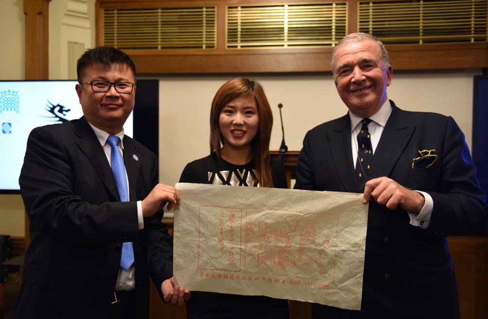
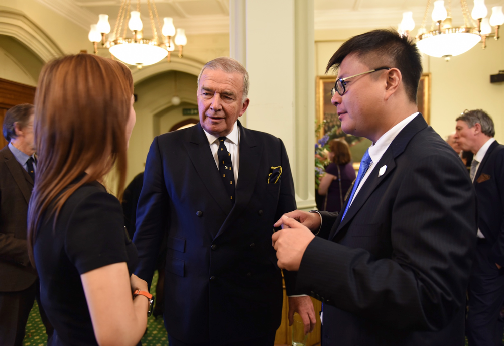
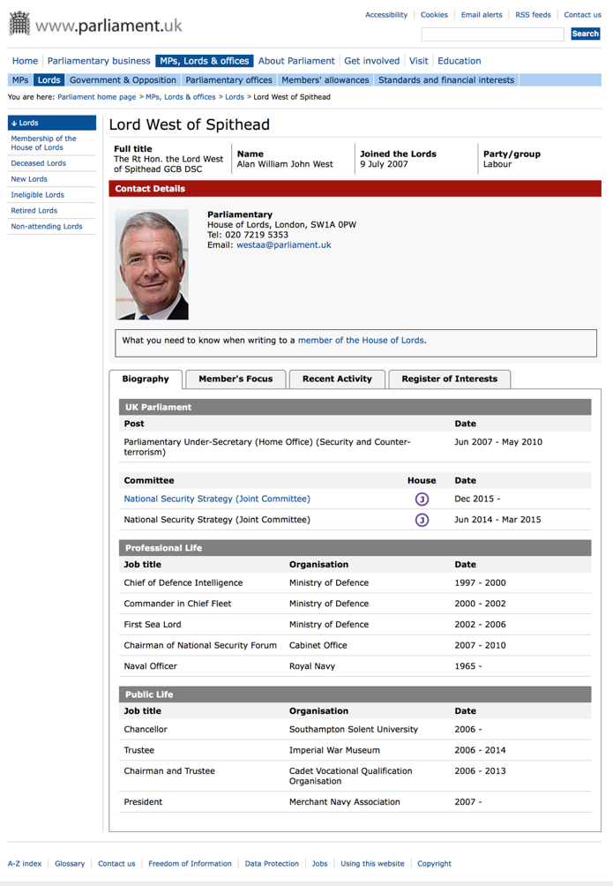
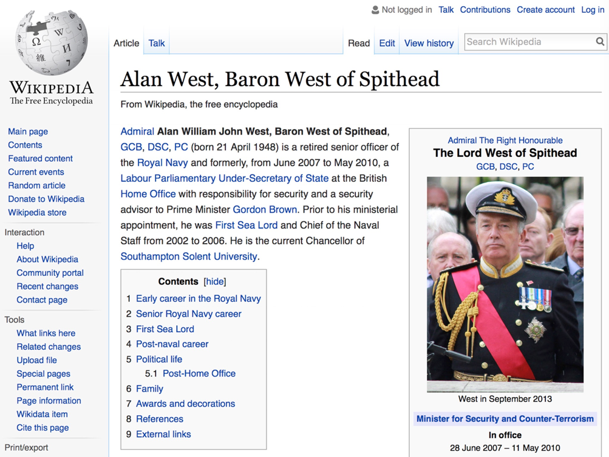
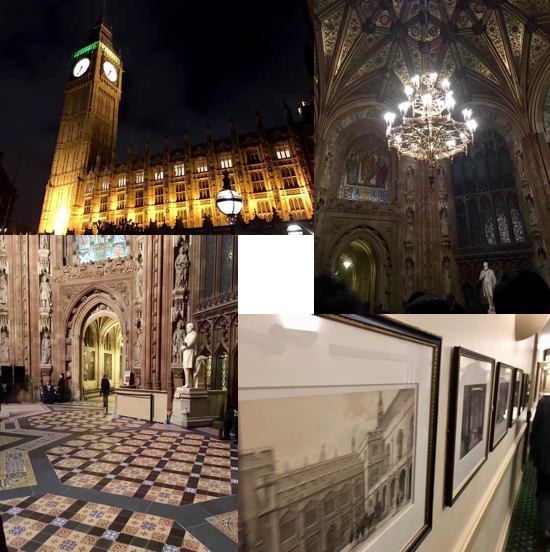

英国皇家海军最高将领Admiral Lord West上将收藏《西厢窥简图》
伦敦时间12月2日晚，英国国会大厦。英国议会上议会议员并任英国皇家海军最高将领Admiral Lord West上将接受UK FLY Aviation董事长王曌华宸和WTS China CEO邵晨博士代表安徽文交中心赠送的《西厢窥简图》。


空军之外华人唯一女特技飞行员王曌华宸、英国主板上市公司WTS CHINA CEO邵晨博士与Admiral Lord West上议员交谈中。
英国议会上议会议员并任英国皇家海军最高将领Admiral Lord West上将简介见： http://www.parliament.uk/biographies/lords/lord-west-of-spithead/3834


详见：维基百科英文版： https://en.wikipedia.org/wiki/Alan_West,_Baron_West_of_Spithead

走进英国国会大厦
北京时间11月30日上午《西厢窥简图》从安徽文交中心库房提出，11月30日下午，WTS CHINA夏文从安徽文交中心CEO刘平手中接过《西厢窥简图》，12月2日，WTS CHINACEO邵晨博士携《西厢窥简图》抵达伦敦。